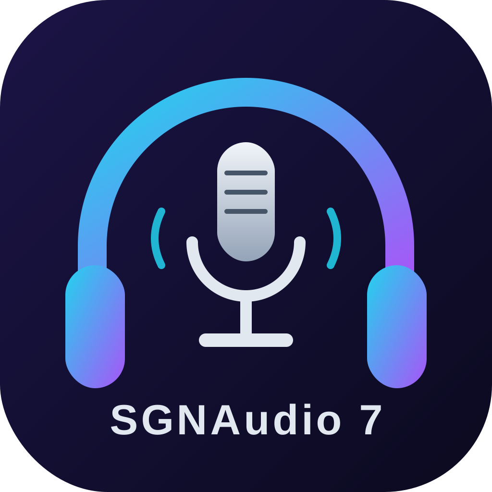

SGNAudio 7
Editor y grabador de audio multipista. Graba, edita, aplica efectos y exporta a WAV o MP3. Gratuito, para Windows y Mac.
Windows- Descarga el archivo
- Ábrelo con doble clic
- Pulsa «Siguiente» hasta terminar
Si sale un aviso azul: «Más información» → «Ejecutar de todas formas».
Mac- Descarga el archivo
- Ábrelo con doble clic
- Arrastra SGNAudio 7 a Aplicaciones
La primera vez: clic derecho sobre la app → «Abrir».
- 🎙 Grabación con micrófono
- 🎚 Multipista con mute, solo y volumen
- ✂ Cortar, copiar, pegar, recortar y deshacer
- ✨ Fundidos, normalizar, eco, reducción de ruido, compresor y más
- 💾 Exporta a WAV y MP3